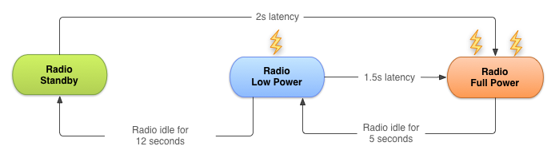
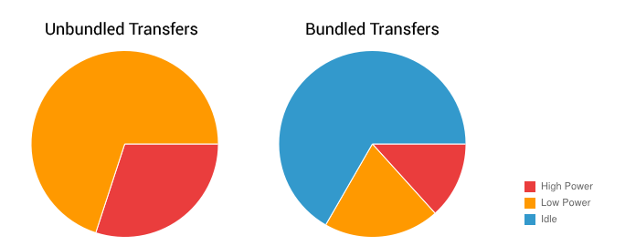

优化下载以高效地访问网络
编写:kesenhoo - 原文:http://developer.android.com/training/efficient-downloads/efficient-network-access.html
使用无线电波（wireless radio）进行传输数据很可能是我们 app 最耗电的来源之一。为了最小化网络连接对电量的消耗，懂得连接模式（connectivity model）会如何影响底层的无线电硬件设备是至关重要的。
这节课介绍了无线电波状态机（wireless radio state machine），并解释了 app 的连接模式是如何与状态机进行交互的。然后会提出建议的方法来最小化我们的数据连接，使用预取（prefetching）与捆绑（bundle）的方式进行数据的传输，这些操作都是为了最小化电量的消耗。
无线电波状态机
一个处于完全工作状态的无线电会大量消耗电量，因此需要学习如何在不同能量状态下进行过渡，当无线电没有工作时，节省电量，当需要时尝试最小化与无线电波供电有关的延迟。
典型的 3G 无线电网络有三种能量状态：
- Full power：当无线连接被激活的时候，允许设备以最大的传输速率进行操作。
- Low power：一种中间状态，对电量的消耗差不多是 Full power 状态下的50%。
- Standby：最小的能量状态，没有被激活或者需求的网络连接。
在低功耗和空闲的状态下，电量消耗会显著减少。这里也会介绍重要的网络请求延迟。从 low power 能量状态返回到 full power 大概需要花费1.5秒，从空闲能量状态返回到 full power 状态需要花费2秒。
为了最小化延迟，状态机使用了一种后滞过渡到更低能量状态的机制。下图是一个典型的 3G 无线电波状态机的图示（AT&T电信的一种制式）。

Figure 1. 典型的 3G 无线电状态机
在每一台设备上的无线状态机，特别是相关的传输延迟（“拖尾时间”）和启动延迟，都会根据无线电波的制式（2G、3G、LTE等）不同而改变，并且由设备正在所使用的网络进行定义与配置。
这一课描述了一种典型的 3G 无线电波状态机，数据来源于 AT&T。无论如何，这些原理和最佳实践结果是具有通用性的，在其他的无线电波上同样适用。
这种方法在典型的网页浏览操作上是特别有效的，因为它可以阻止用户在浏览网页时的一些不受欢迎的延迟。相对较短的拖尾时间也保证了当一个网页浏览会话结束的时候，无线电波可以转移到相对较低的能量状态。
不幸的是，这个方法会导致在现代的智能机系统例如 Android 上的 app 效率低下。因为 Android 上的 app 不仅仅可以在前台运行（重点关注延迟），也可以在后台运行（优先处理耗电量）。(无线电波的状态改变会影响到本来的设计，有些想在前台运行的可能会因为切换到低能量状态而影响程序效率。坊间说手机在电量低的状态下无线电波的强度会增大好几倍来保证信号，可能与这个有关。)
App 如何影响无线电波状态机
每次创建一个新的网络连接，无线电波就切换到 full power 状态。在上面典型的 3G 无线电波状态机情况下，无线电波会在传输数据时保持在 full power 的状态，加上一个附加的5秒拖尾时间，再之后会经过12秒进入到 low power 能量状态。因此对于典型的 3G 设备，每一次数据传输的会话都会导致无线电波消耗大概20秒时间来提取电能。
实际上，这意味着一个每18秒传输1秒非捆绑数据（unbundled data）的 app，会一直保持激活状态（18 = 1秒的传输数据 + 5秒过渡时间回到 low power + 12秒过渡时间回到standby）。因此，每分钟会消耗18秒 high power 的电量，42秒 low power 的电量。
通过比较，同一个 app，每分钟传输持续3秒的捆绑数据（bundle data），会使得无线电波持续在 high power 状态仅仅8秒，在 low power 状态仅仅12秒钟。
上面第二种传输捆绑数据（bundle data）的例子，可以看到减少了大量的电量消耗。图示如下：

Figure 2. 无线电波使用捆绑数据 vs 无线电波使用非捆绑数据
预取数据
预取数据是一种减少独立数据传输会话数量的有效方法。预取技术指的是在一定时间内，单次连接操作，以最大的下载能力来下载所有用户可能需要的数据。
通过前面的传输数据的技术，减少了大量下载数据所需的无线电波激活时间。这样不仅节省了电量，也改善了延迟，降低了带宽，减少了下载时间。
预取技术通过减少应用里由于在执行一个动作或者查看数据之前等待下载完成造成的延迟，来提高用户体验。
然而，过于频繁地使用预取技术，不仅仅会导致电量消耗快速增长，还有可能预取到一些并不需要的数据，导致增加带宽的使用和下载配额。另外，需要确保预取不会因为 app 等待预取全部完成而延迟应用的启动。从实践的角度，那意味着需要逐步处理数据，或者按照优先级顺序开始进行持续的数据传递，这样会首先下载和处理应用启动时需要的数据。
根据正在下载的数据大小与可能被用到的数据量来决定预取的频率。作一个粗略的估计，根据上面介绍的状态机，对于有50%的机会被当前的用户会话用到的数据，我们可以预取大约6秒(大约1-2Mb)，这大概使得潜在可能要用的数据量与可能已经下载好的数据量相一致。
通常来说，预取1-5Mb会比较好，这种情况下，我们仅仅只需要每隔2-5分钟开始另一段下载。
根据这个原理，大数据的下载，比如视频文件，应该每隔2-5分钟开始另一段下载，这样能有效的预取到下面几分钟内的数据进行预览。
值得注意的是，更进一步的下载应该是是捆绑的（bundled），下一小节将会讲到，批量处理传送和连接，而且上面那些大概的数据与时间可能会根据网络连接的类型与速度有所变化，这将在根据网络连接类型来调整下载模式讲到。
让我们来看一些例子：
一个音乐播放器
我们可以选择预取整个专辑，然而这样在第一首歌曲之后用户会停止听歌，那么就浪费了大量的带宽和电量。
一个比较好的方法是维护正在播放的那首歌曲的缓冲区。对于流媒体音乐，不应该去维护一段连续的数据流，因为这样会使得无线电波一直保持激活状态，而应该考虑用 HTTP 流直播来集中传输音频流，就像上面描述的预取技术一样（下载好2Mb，然后开始一次取出，再去下载下面的2Mb）。
一个新闻阅读器
许多新闻 app 尝试通过只下载新闻标题来减少带宽，完整的文章仅在用户想要读取的时候再去读取，而且文章也会因为太长而刚开始只显示部分信息，等用户下滑时再去读取完整信息。
使用这个方法，无线电波仅仅会在用户点击更多信息的时候才会被激活。但是，在切换文章分类预阅读文章的时候仍然会造成大量潜在的消耗。
一个比较好的方法是在启动的时候预取一个合理数量的数据，比如在启动的时候预取第一条新闻的标题与缩略图信息，确保较短的启动时间。之后继续获取剩余新闻的标题和缩略图信息。同时获取至少在主要标题列表中可用的每篇文章的文本。
另一个方法是预取所有的标题，缩略信息，文章文字，甚至是所有文章的图片——根据既设的后台程序进行逐一获取。这样做的风险是花费了大量的带宽与电量去下载一些不会阅读到的内容，因此应该谨慎使用这种方法。
其中的一个解决方案是，仅当在连接至Wi-Fi或者设备正在充电时，调度到 Full power 状态进行下载。关于这个细节的实现，我们将在后面的根据网络连接类型来调整下载模式课程中介绍。
批量处理传送和连接
每次发起一个连接——不论相关传送数据的大小——当使用典型的 3G 无线网络时，可能会导致无线电波消耗大约20秒的电量。
一个 app 每20秒 ping 一次服务器，仅仅是为了确认 app 正在运行和对用户可见，那么无线电波会无限期地处于开启状态，导致即使在没有实际数据传输的情况下，仍会消耗大量电量。
因此，对传送的数据进行捆绑操作和创建一个等待传输队列就显得非常重要。操作正确的话，可以使得大量的数据集中进行发送，这样使得无线电波的激活时间尽可能的少，同时减少大部分电量的花费。
这样做的潜在好处是尽可能在每次传输数据的会话中尽可能多的传输数据而且减少了会话的次数。
那就意味着我们应该通过队列延迟容忍传送来批量处理我们的传输数据，和抢占调度更新和预取，使得当要求时间敏感传输时，数据会被全部执行。同样地，我们的计划更新和定期的预取应该开启等待传输队列的执行工作。
预取数据部分有一个实际的例子。
以上述使用定期预取的新闻应用为例。新闻阅读器收集分析用户的信息来了解用户的阅读模式，并按照新闻报道的受欢迎程度对新闻进行排序。为了保证新闻最新，应用每个小时会检查更新一次。为了节省带宽，预取缩略图信息和当用户选择某个新闻时下载全部图片，而不去下载每篇文章的所有图片。
在这个例子中，所有在 app 中收集到的分析信息应该捆绑在一起并放入下载队列，而不是一收集到信息就传输。当下载完一张全尺寸的图片或者执行每小时一次更新时，应该传输捆绑好的数据。
任何时间敏感或者按需的传输——例如下载全尺寸图片——应该抢占定期更新。计划好的更新应该与按需传送在同一时间执行。这个方法减小了执行一个定期更新的开销，该定期更新通过下载必要的时间敏感图片的背负式传输实现。
减少连接
通常来说，重用已经存在的网络连接比起重新建立一个新的连接更有效率。重用网络连接同样可以使得在拥挤不堪的网络环境中进行更加智能地作出反应。
当可以捆绑所有请求在一个 GET 里面的时候，不要同时创建多个网络连接或者把多个 GET 请求进行串联。
例如，可以一起请求所有文章的情况下，不要根据多个新闻会话进行多次请求。为传输与服务端和客户端 timeout 相关的终止 / 终止确认数据包，无线电波会保持激活状态，所以如果不需要使用连接时，请立即关闭，而不是等待他们 timeout。
之前说道，如果过早对一个连接执行关闭操作，会导致需要额外的开销来建立一个新的连接。一个有用的妥协是不要立即关闭连接，而是在固定期间的 timeout 之前关闭（即稍微晚点却又不至于到 timeout）。
使用 DDMS Network Traffic Tool 来确定问题的区域
Android DDMS (Dalvik Debug Monitor Server) 包含了一个查看网络使用详情的栏目来允许跟踪 app 的网络请求。使用这个工具，可以监测 app 是在何时，如何传输数据的，从而进行代码的优化。
Figure 3 显示了传输少量数据的网络模型，可以看到每次差不多相隔15秒，这意味着可以通过预取技术或者批量上传来大幅提高效率。

Figure 3. 使用 DDMS 检测网络使用情况
通过监测数据传输的频率与每次传输的数据量，可以查看出哪些位置应该进行优化。通常的，我们会寻找类似短穗状的地方，这些位置可以延迟，或者应该导致一个后来的传输被抢占。
为了更好的检测出问题所在，Traffic Status API 允许我们使用 TrafficStats.setThreadStatsTag() 方法标记数据传输发生在某个Thread里面，然后可以手动地使用 tagSocket() 进行标记或者使用 untagSocket()` 来取消标记，例如：
TrafficStats.setThreadStatsTag(0xF00D);
TrafficStats.tagSocket(outputSocket);
// Transfer data using socket
TrafficStats.untagSocket(outputSocket);
Apache 的 HttpClient 与 URLConnection 库可以根据当前的 getThreadStatusTag() 值自动给 sockets 加上标记。那些库在通过 keep-alive pools 循环的时候也会为 sockets 加上或者取消标签。
TrafficStats.setThreadStatsTag(0xF00D);
try {
// Make network request using HttpClient.execute()
} finally {
TrafficStats.clearThreadStatsTag();
}
给 Socket 加上标签（Socket tagging）是在 Android 4.0 上才被支持的, 但是实际情况是仅仅会在运行Android 4.0.3 或者更高版本的设备上才会显示。